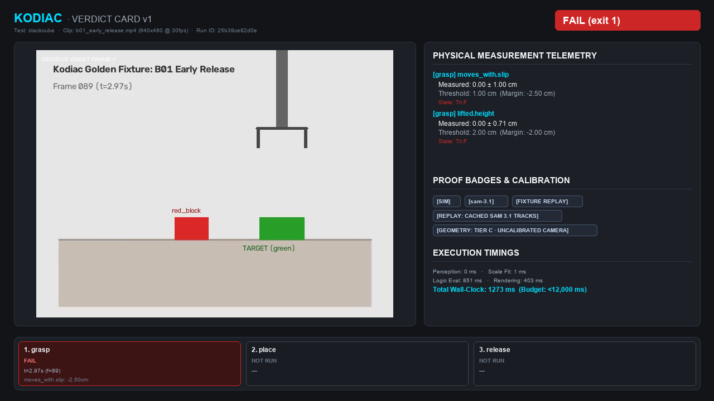
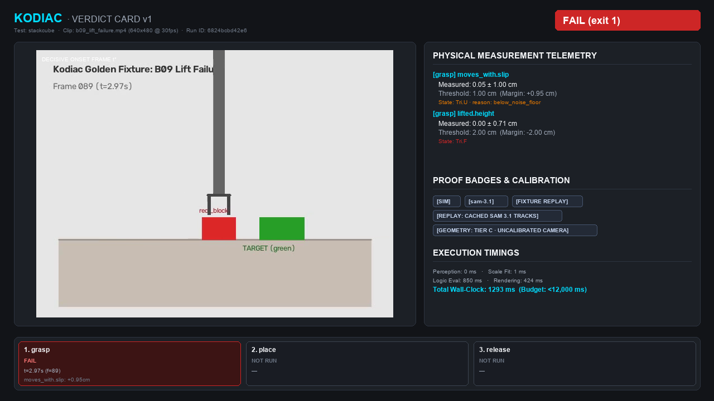
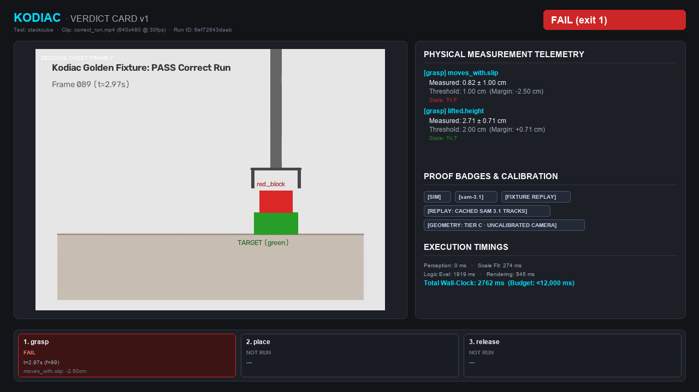
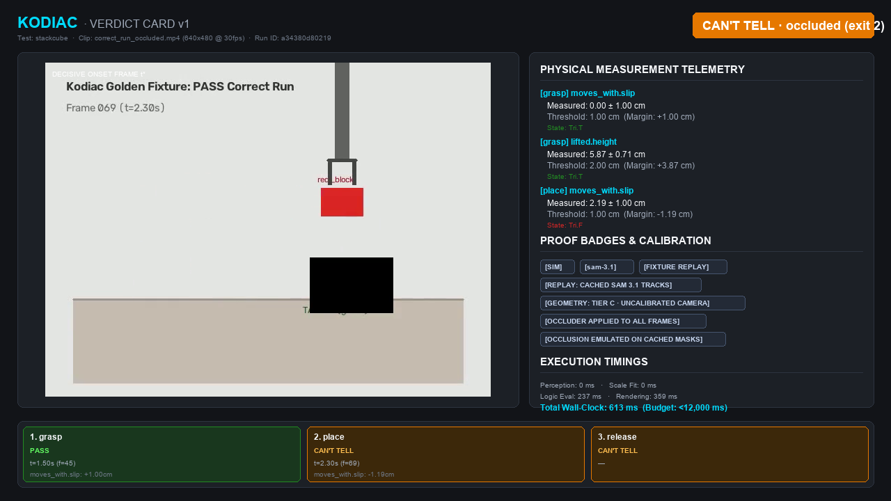
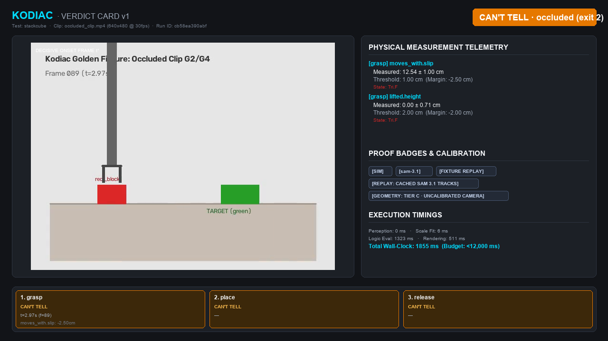

Kodiac
Robots can finally fail a test.
Tests, git bisect and git blame for robots: a clip goes in, a verdict
(PASS, FAIL or CAN'T TELL) comes out, with the measured numbers behind it.
Video
The 3-minute video will be embedded here at submission.
Live app
The interactive page (grade a clip with a wall-clock timer, occlusion brush, Teach it) is deployed separately; its URL is added here when it is published.
Cached replays

Seeded bug B1: released too early
FAIL[FIXTURE REPLAY][REPLAY: CACHED SAM 3.1 TRACKS][GEOMETRY: TIER C · UNCALIBRATED CAMERA]⚡ CACHED
Seeded bug B2: placed off-centre
FAIL[FIXTURE REPLAY][REPLAY: CACHED SAM 3.1 TRACKS][GEOMETRY: TIER C · UNCALIBRATED CAMERA]⚡ CACHED

Seeded bug B9: lifted too little
FAIL[FIXTURE REPLAY][REPLAY: CACHED SAM 3.1 TRACKS][GEOMETRY: TIER C · UNCALIBRATED CAMERA]⚡ CACHED

Reference clip: the correct run
FAIL[FIXTURE REPLAY][REPLAY: CACHED SAM 3.1 TRACKS][GEOMETRY: TIER C · UNCALIBRATED CAMERA]⚡ CACHED

Occlusion brush painted over the target block
CAN'T TELL[FIXTURE REPLAY][REPLAY: CACHED SAM 3.1 TRACKS][GEOMETRY: TIER C · UNCALIBRATED CAMERA][OCCLUDER APPLIED TO ALL FRAMES][OCCLUSION EMULATED ON CACHED MASKS]⚡ CACHED

Scene occluded during transport
CAN'T TELL[FIXTURE REPLAY][REPLAY: CACHED SAM 3.1 TRACKS][GEOMETRY: TIER C · UNCALIBRATED CAMERA]⚡ CACHED
Which Meta model does what
| Model | Role | On the hosted page today |
|---|---|---|
| SAM 3.1 | Measures: segments and tracks every object, frame by frame | Cached SAM 3.1 tracks (fixture replay) on this page; live API path exists but needs a key |
| Muse Spark | Compiles a demo or an instruction into a .green test; judges appearance-only clauses | Not wired here (no key). Typed instructions use the deterministic template compiler, badged as such |
| Muse Voice | Anchors the spoken intent to timestamps | Not available on this page (no key); type the instruction instead |
| Muse Wonder | Adjudicates hard cases and keeps memory | Not available on this page (no key) |
| Muse Code | Runs the /goal loop that is blocked until Kodiac run returns PASS | Runs in the CLI/IDE, not on this page |
Limits we are honest about
- Without API keys this deployment grades only the curated clips (perception is replayed from recorded tracks); an arbitrary upload cannot be segmented here and gets a clear message instead of a made-up verdict.
- The occlusion brush blackens the real pixels of the clip. In fixture mode it also removes the covered pixels from the cached masks (badge: OCCLUSION EMULATED ON CACHED MASKS), because a keyless server cannot re-segment.
- Geometry on the curated clips is Tier C (uncalibrated camera); numbers are relative, and the card says so.
- The curated clips are kinematic-mock simulation footage, not real robots (badge: FIXTURE REPLAY).
- CAN'T TELL is a real answer: when the evidence is not good enough the verdict abstains instead of guessing.
- The timer shows the measured wall-clock of what actually ran. A cached replay shows its lookup time, never a grading time.
Privacy
Uploads are processed in memory and on disk only to grade them, are never used for training, and are deleted automatically within 24 hours. Logs store salted hashes, never IP addresses or filenames.